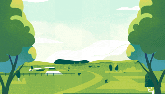
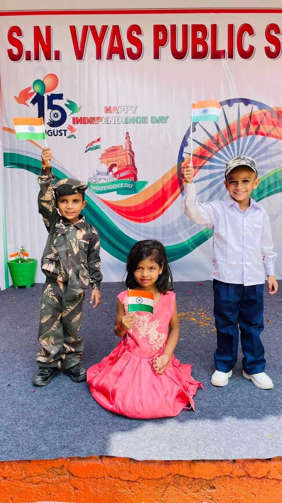
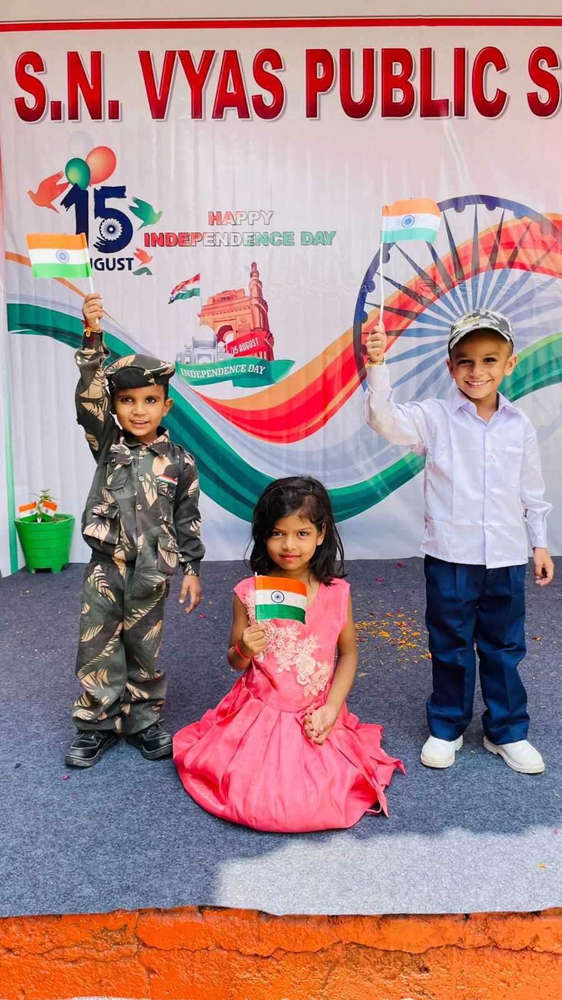

S.N VYAS PUBLIC SCHOOL
Welcome to S.N. Vyas Public School (Satyanarayan Vyas Public School) - a caring and vibrant place where children take their very first steps into the world of learning. From Nursery to Class 5, we focus on building strong foundations for life through a perfect blend of academics, values, creativity, and fun.
At our school, every child is seen as a "little angel" - full of potential, imagination, and dreams. Our dedicated staff is committed to nurturing each student in a safe, joyful, and stimulating environment that encourages curiosity and confidence.
We don't just teach - we inspire, we guide, and we celebrate every milestone of our students.
Come, be a part of our school family - where little angels grow wings!
Vision
-- To provide a joyful and nurturing learning environment that helps children become confident, kind, and curious learners - ready to embrace the future with strong values and a love for learning.
Mission
-- To deliver quality education from Nursery to Class 5 in a safe, creative, and inclusive atmosphere.
-- To instill moral values, self-discipline, and empathy from an early age.
-- To encourage creativity, imagination, and independent thinking in every child.
-- To involve parents as active partners in the learning journey of their children.
-- To make learning a joyful experience through innovative teaching methods and activity-based learning.
# Why Choose Us?
-- Strong Foundations: We focus on holistic early education that prepares children for future academic success.
-- Experienced & Caring Staff: Our teachers are trained, compassionate, and child-friendly.
-- Safe & Child-Centered Environment: Safety, cleanliness, and emotional well-being are our top priorities.
-- Modern Teaching Aids: Smart classes, play-based learning, and engaging activities.
-- Focus on Values: We help children grow into good human beings, not just good students.
-- Parental Involvement: Regular updates, PTMs, and open communication with parents.
# Facilities
-- Spacious and colorful classrooms
-- Safe indoor and outdoor play areas
-- Smart classrooms with audio-visual learning
-- Library with children's books and storytelling sessions
-- Activity rooms for art, dance, and music
-- Clean drinking water and hygienic toilets
-- CCTV surveillance for safety and monitoring
-- Regular health check-ups and awareness programs
# Parent Testimonials
"S.N. Vyas Public School is the best decision we made for our child. The teachers are loving and truly care about every student."
- Mrs. Neha Sharma, Parent of Class 1 Student


 
